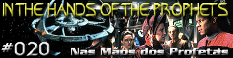
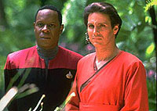

|
Deep
Space Nine
Temporada 1

Anlise do episdio por
Luiz
Castanheira



|
MANCHETE
DO EPISDIO Episdio anterior | Prximo episdio
Data Estelar:
desconhecida.  O pessoal da Federao e o pessoal Bajoriano de Deep Space Nine entram em conflito quando uma extremista religiosa Bajoriana, a intragvel Vedek Winn, vem estao e desafia o ensino secular da escola de Keiko O'Brien.A esposa do chefe de operaes anda contradizendo a religio Bajoriana ao falar da Fenda Espacial - e no, do Templo Celestial dos Profetas. Comentrios: "In the Hands of the Prophets" retoma a questo da disputa pelo "papado" Bajoriano, aps o ch de sumio de Kai Opaka no quadrante Gama. No vcuo espiritual deixado pelo desaparecimento da Kai, surgem dois candidatos sucesso na liderana espiritual de Bajor: o propenso a reformas e popular Bareil e a conservadora e claramente sedenta pelo poder Winn. Com tal disputa oferecendo um genuno senso de urgncia, temos um episdio recheado de fascinantes questes sobre f e religiosidade propiciadas por um roteiro inteligente que mantm uma perspectiva equilibrada todo o tempo. Embora possa parecer para muitos como um tema que est mais para a Idade Mdia, vale lembrar que em muitas escolas norte-americanas a religio e o ensino ainda travam grandes batalhas. Basta dizer que o criacionismo - a "teoria" que explica o Universo pela histria bblica - ensinado a muitas crianas norte-americanas como a mais plausvel histria da origem do Universo e da vida. O evolucionismo de Charles Darwin mencionado em diversos locais como uma teoria menor e sem fundamento cientfico. Pasmem! Merece destaque especial uma cena em que Ben Sisko explica de maneira clara e justa os mtodos e objetivos de Winn e de seus seguidores para o seu filho Jake. timas atuaes de todos os envolvidos, especialmente de Avery Brooks oferecendo a Ben Sisko grande presena e paixo por sua misso. Bela direo de Livingston, com direito a uma inesquecvel cena em flashback na hora do atentado da alferes Neela vida de Bareil. Citaes Keiko - "I am a teacher. My responsibility is to expose my students to knowledge, not hide it from them." ("Eu sou uma professora. Minha responsabilidade expor os meus alunos ao conhecimento, no escond-lo deles.") Bareil - "The Prophets teach us patience." ("Os Profetas nos ensinam pacincia.") Sisko - "It appears they also teach you politics." ("Parece que eles tambm vos ensinam poltica.") Trivia:
Escrito por Robert Hewitt
Wolfe Elenco: Avery Brooks como
Benjamin Lafayette Sisko Elenco convidado: |